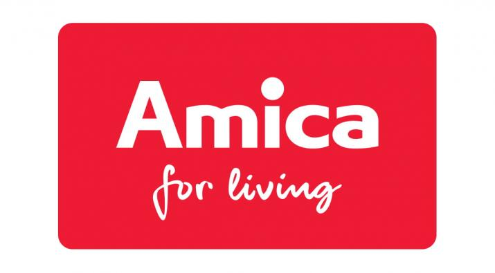

07.2026 — obecnie

Awans · Poziom Mid
Specjalista ds. Wsparcia IT Użytkownika Końcowego
Amica S.A. · Wronki
- Samodzielna obsługa zaawansowanych zgłoszeń oraz wsparcie użytkowników — lokalnie i w oddziałach zagranicznych.
- Zarządzanie tożsamością i uprawnieniami w Active Directory oraz Azure Active Directory (Entra ID).
- Utrzymanie i administracja flotą urządzeń mobilnych oraz stacji roboczych z wykorzystaniem Microsoft Intune.
- Koordynacja współpracy z 2. i 3. linią wsparcia oraz firmami zewnętrznymi; mentoring i wdrażanie nowych pracowników.